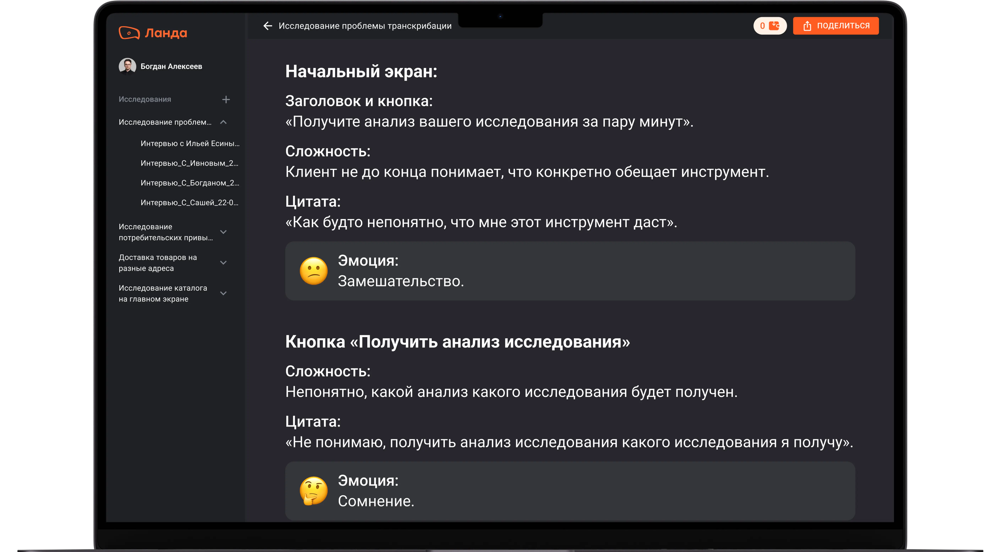
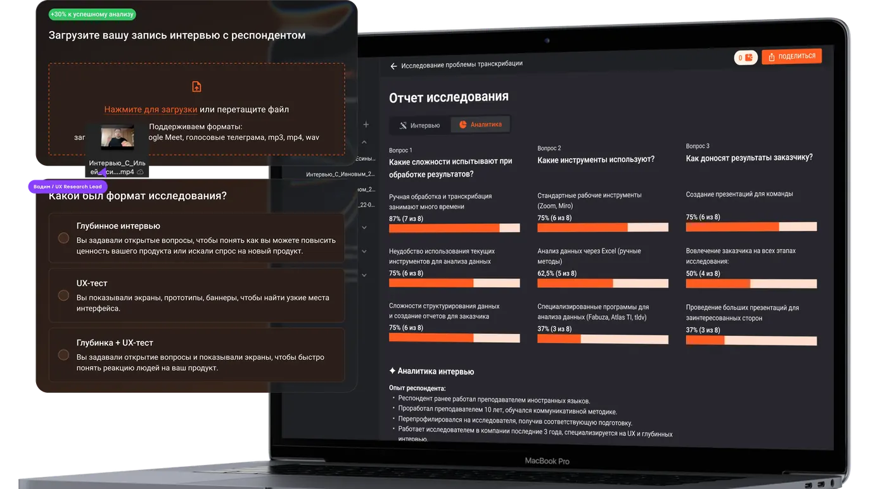

Landa Research. AI сервис для анализа UX‑тестов c точностью 94%
Внутренний AI‑стартап в топ‑3 банке РФ. С нуля — от идеи до пилотов с ВТБ, Госуслугами, Почтой России и Яндекс Практикумом.

Внутренний AI‑стартап с нуля
Задача
Разработать сервис для анализа исследований — интервью, UX‑тесты, протоколы — и провести пилоты для подтверждения целевых гипотез. Ключевая цель — сократить путь от данных до дизайн-решения с помощью ИИ.
Моя роль
Art Director и Product Owner. С нуля выстроил продуктовый стек для исследователей, дизайнеров и руководителей направлений. Собирал команду разработчиков и методологов, отвечал за P&L продукта.

Провел более 50 JTBD‑интервью с исследователями

В 2,4 раза увеличил активацию
После запуска 66% пользователей не доходили до загрузки файла. Добавили три обязательные модалки в первой сессии: создание исследования, загрузка файлов, выбор методологии. В итоге загрузка файлов выросла с 34% до 82,6%.

От исследований к прототипам
Быстро обнаружили: сервисом активно пользуются дизайнеры и продакты — им нужен другой UX. Старая архитектура давала анализ отдельных тестов, но не показывала проблемы на всём пути пользователя.
Ключевой инсайт: наша ценность — не в транскрипции, а в анализе UX‑тестов. Нужно переориентироваться на дизайнеров/продактов и дать им инструмент для анализа всего пути пользователя по прототипу.
RAG как основа точности анализа
LLM даёт реальные выводы без привязки к методологам. Теперь модели интерпретируют каждое интервью по схеме, обогащённой базой знаний. Точность по финализации — 94%.
UX‑эвристики
Перевод в векторизированные документы — основа базы знаний RAG.
Когнитивные искажения
Дополнили базу паттернами когнитивных искажений пользователей.
Реальные кейсы
Добавили внутренние кейсы — модель обучена на специфике финтех‑продуктов.

Подтверждено реальными командами
Госуслуги
«Сервис нас спас в условиях сжатых сроков. Мы сэкономили около 2–3 дней двоих исследователей. Остались очень довольны и будем продолжать использовать»
Екатерина Гудкова
UX Research Lead
Почта России
«В формате анализа UX-теста хорошо выделены основные проблемы. Интересное саммари по эмоциям респондента. Думали, выводы будут общие — ожидания превзошёл»
Елена Поносова
UX Research Lead
ВТБ
«Очень понравилось, что сервис считывает не только высказывания, но и эмоции — даже человеку это порой трудно. Инструмент работает быстро и качественно»
Дарья Мороз
Product Designer